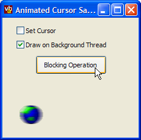

AniCursor Code (26K)
AniCursor Code (26K)
 31 Mar 2003
31 Mar 2003
First Posted

Using Animated Cursors in .NET
The Cursor class provided with System.Windows.Forms doesn't support animated cursors - but this tiny class lets you use them interchangably with the existing .NET Framework cursors. Also provided with the code is a technique for drawing cursors directly onto forms and animating on a background thread.
Animated Cursors
The Cursor class in System.Windows.Forms is another one of those sealed .NET Framework classes which doesn't support all of the facilities of the underlying API (another obvious example of this is the ImageList class). Creating a class which allows you to use animated cursors is nice and easy though, and although it can't extend the existing Cursor class, it can provide an instance of a Cursor object containing an animated cursor that you can use interchangably with the existing class.
AniCursor.cs Implementation
The class provides the following methods and properties:
- Constructors
Constructors are provided for instantiating a cursor either from a file, a Win32 resource (although you will have to use a custom build process if you want to include a Win32 resource since VS.NET does not support adding Win32 resources) and directly from another cursor handle. - Cursor
Returns the animated cursor as a System.Windows.Forms.Cursor which you can assign to the Cursor property of any control or form. - Handle
Returns the handle of the current animated cursor, if any, or IntPtr.Zero otherwise. - FrameCount
Returns the number of frames within the currently loaded cursor. - Frame
Gets/sets the current frame of the cursor to draw using the Draw methods. The Step method moves to the next frame and manages looping back to the beginning of the animation. - Draw
These methods allow you to draw the current frame of the cursor onto a System.Drawing.Graphics object, optionally specifying the size and whether the cursor should be stretched to fit the available space.
Building AniCursor
The AniCursor class is really very simple to build since the powerful LoadImage and DrawIconEx API calls provided with user32.dll on Window Systems do almost all of the work. LoadImage is a multi-purpose function that can generally successfully load any bitmap, icon or cursor, including animated cursors, regardless of whether it is on disk or part of a resource in an executable or DLL. DrawIconEx can be used to draw elements of any icon or cursor including the frames of the cursors. The only thing that can't be done as things stand is to instantiate an animated cursor from a .NET resource file without writing it to an intermediate temporary file on disk. This is because LoadImage unfortunately does not provide a stream or byte array based overload.
Drawing on a Background Thread
Having experienced first-hand the pain involved in trying to create a free-threaded component using VB6, the .NET way comes as a breath of fresh air. Despite Matt Currland's best efforts in his great book "Advanced VB6", I was never entirely successful in getting a stable free-threaded component running. In .NET its a lot easier, but you still need to take a great deal of care to make sure things work properly.
This sample uses a modified version of some great code from the February 2003 issue of MSDN Magazine (AsyncStart.cs) which makes it particularly easy to create a background threaded class which interacts with the UI. The best elements of this class are that it does most of the work in provided a nice model for cancelling a background threaded class from the UI and assists you avoiding some of the many thousands of ways you can inadvertently create a deadlock.
Only the cancellation functionality of the sample is actually used since once you start running the Animated cursor on a background thread it just loops forever, sleeping and drawing. Rather than having to call across onto the UI thread to perform the drawing (which would be blocked by the UI thread) the code takes advantage of System.Drawing to draw directly onto the window handle instead, like the way the Common Controls AVI player control works. I'd be interested to hear if anyone has more direct experience of the legality of this method from a threading perspective as the .NET documentation isn't particularly friendly on the subject of the thread safety or otherwise of the GDI+ wrapper.
Conclusion
A small amount of unmanaged code allows you to add animated cursor support to .NET applications. The resulting cursor can either be used as a pointer in the normal way, or the frames within it can be drawn onto a Graphics object. There is also a small collection of useful animated cursors to download from the Graphics Library to use with the class.